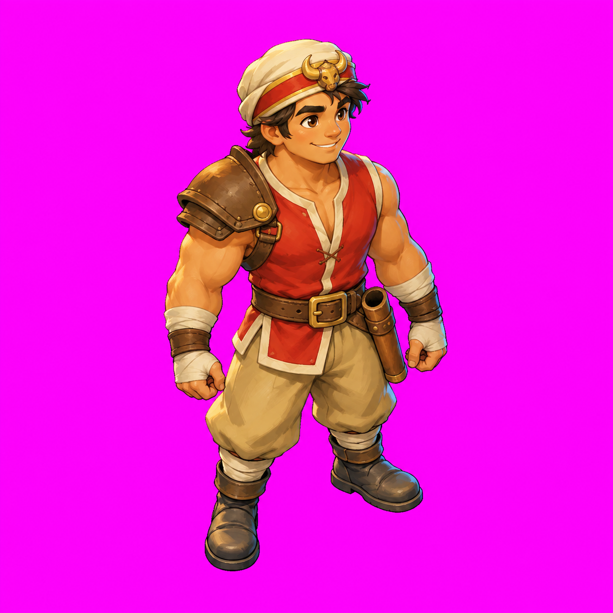
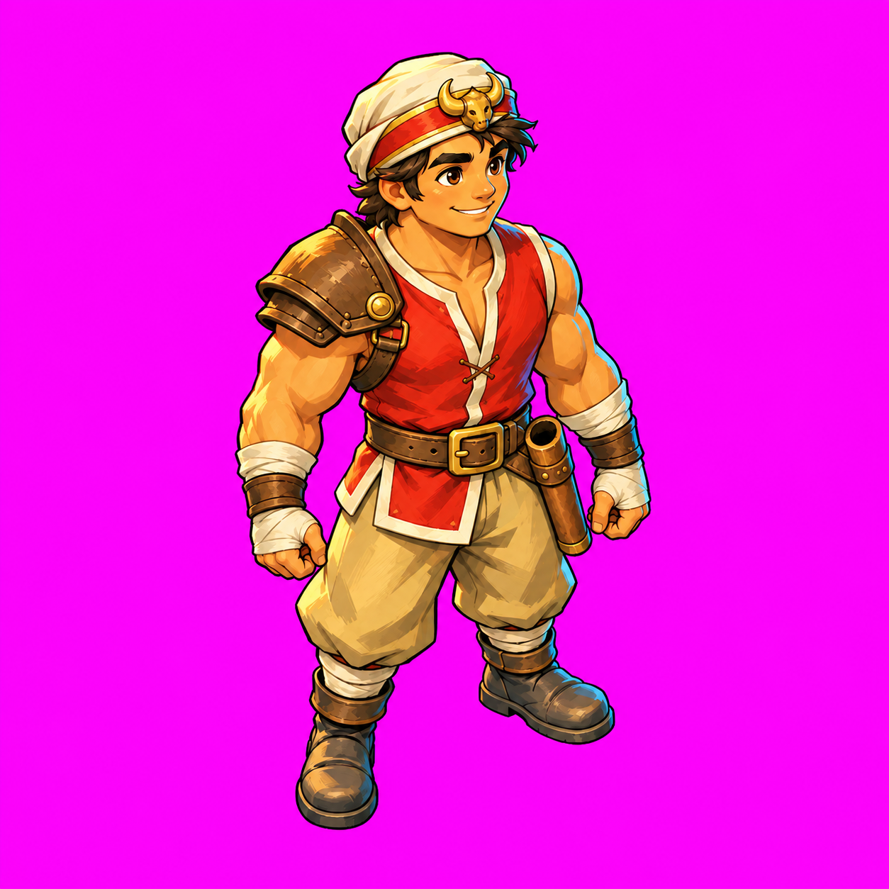
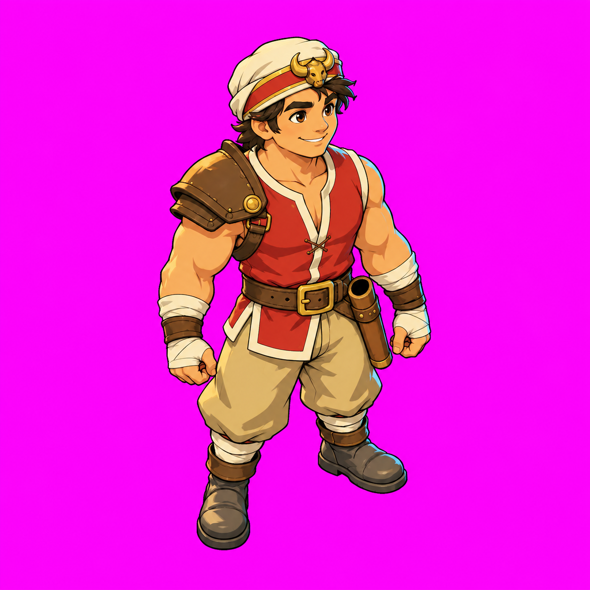
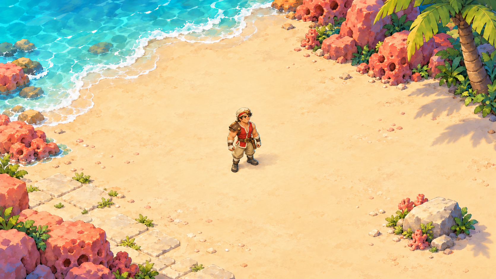
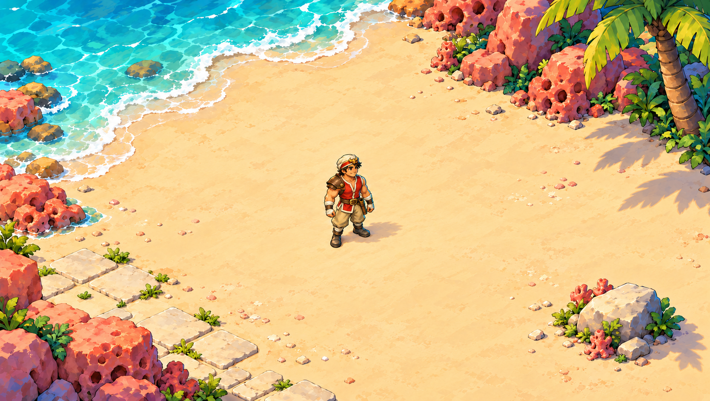
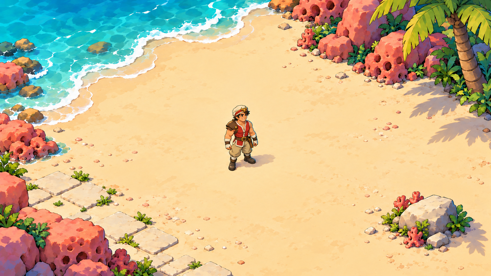

Shot 1 · Buffalo
Three rendering treatments of the same empty-handed standing pose, plus a matching Coral Beach scene per style. This is a style choice only. No model sheet, sword, animation or game import has been started.
A · Softer painterly


Gentler interior transitions and softer painted forms.
Exact prompt + referencesB · Ink-and-paint


Stronger ink, saturated planes and more emphatic rim light.
Exact prompt + referencesC · Graphic cel shading


Flatter color masses, hard shadow shapes and less texture.
Exact prompt + referencesCharacter-size comparison
Each identical-size source canvas displays at 175×175 px, making the full figure approximately150px tall. No per-image crop or scale correction is applied.
Coral Beach · fixed game-size display
Same 1152×648 display for every scene. Buffalo is approximately150px tall here. Keep browser zoom at100%; scroll horizontally on smaller screens rather than shrinking the image. These are generated illustrations from the requested2:1 game view, not engine screenshots.



Current scene prompt + references · Open native PNG

Raw-output caveat: background prompts specify #FF00FF, but generated pixels vary slightly; these are unkeyed magenta style studies. Canvas/pivots are not runtime-calibrated. See NOTES.md for all11 generations,5 rejects, source sizes and limitations. Choose a style before any further shots.